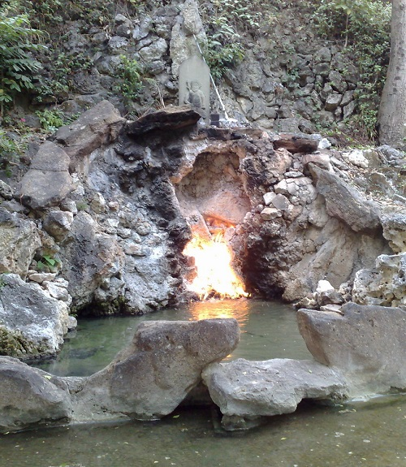
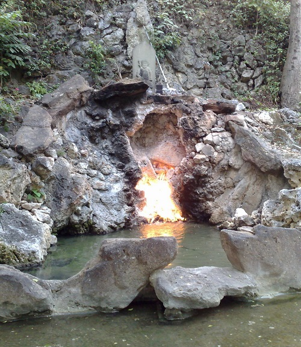

Southern Taiwan is with plain geographically,
which benefits the development of industries. Located in
the tropical zone, the climate is warm throughout the year
with little seasonal variation. In history, this is the
earliest region being developed, which can be traced back to
about 400 years ago. People here are very friendly,
and the price is relatively cheap. If you like
both historical sites and tropical style,
southern Taiwan will definitly be an interesting place to you!
 



Alishan
Anping
Lotus Pond
Guanziling
Meinong
Formosa Boulevard Station
Chimei Museum
Tianliao Moon World
Love River